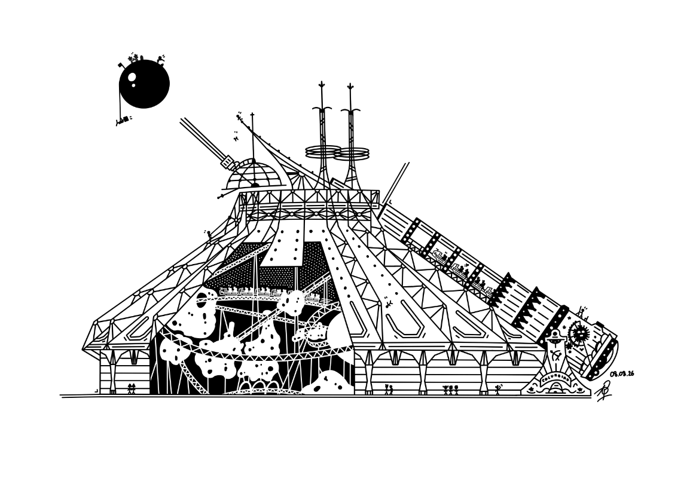

Journey to the Moon
Embark on a journey aboard the legendary spaceship bound for the Moon

The cannon tilts, a deep roar echoes, and the rocket is launched at full speed towards the Moon.

Embark on a journey aboard the legendary spaceship bound for the Moon

The cannon tilts, a deep roar echoes, and the rocket is launched at full speed towards the Moon.
